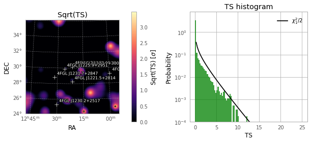
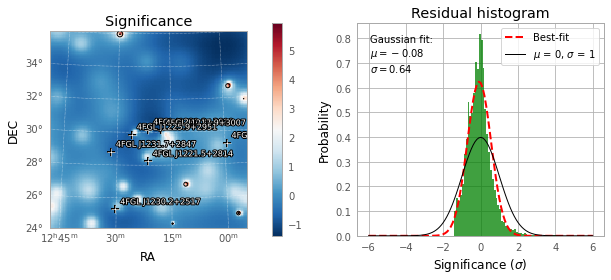
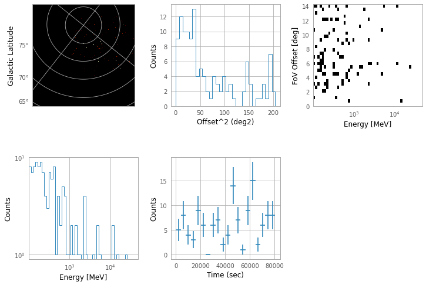

[1]:
%load_ext autoreload
%autoreload 2
Step 1. Generate a configuration file for Fermipy
[2]:
ls ./veritas
95127.anasum.fits 95130.anasum.fits initial.pickle
95128.anasum.fits analyzed.pickle obs-index.fits.gz
95129.anasum.fits hdu-index.fits.gz simple.pickle
[3]:
import vtspy
config = vtspy.JointConfig(files="./veritas/")
# or FermipyConfig(files="./veritas/95127.anasum.fits")
WARNING: version mismatch between CFITSIO header (v4.000999999999999) and linked library (v4.01).
WARNING: version mismatch between CFITSIO header (v4.000999999999999) and linked library (v4.01).
WARNING: version mismatch between CFITSIO header (v4.000999999999999) and linked library (v4.01).
2022-06-14 23:20:54 INFO : a configuration file (config.yaml) is created.
[4]:
config.print_config()
2022-06-14 23:20:54 INFO :
fermi:
data:
evfile: ./fermi/EV00.lst
scfile: ./fermi/SC00.fits
ltcube: null
binning:
roiwidth: 12
binsz: 0.08
binsperdec: 8
coordsys: CEL
projtype: WCS
selection:
emin: 100
emax: 300000
tmin: 599529605.0
tmax: 599616005.0
zmax: 105
evclass: 128
evtype: 3
glon: 186.3593855387067
glat: 82.73442268671826
ra: 185.3412470056114
dec: 30.17694222440679
target: 1ES1218+304
gtlike:
edisp: true
irfs: P8R3_SOURCE_V3
edisp_disable:
- isodiff
- galdiff
model:
src_roiwidth: 12
galdiff: $FERMI_DIFFUSE_DIR/gll_iem_v07.fits
isodiff: $FERMI_DIFFUSE_DIR/iso_P8R3_SOURCE_V3_v1.txt
catalogs: /Users/dtak/Research/scripts/vts-fermi/vtspy/refdata/gll_psc_v22.fit
fileio:
outdir: ./fermi/
logfile: ./fermi/log/fermipy.log
usescratch: false
veritas:
background:
file: Hipparcos_MAG8_1997
distance: 1.75
magnitude: 7
fileio:
outdir: ./veritas/
cuts:
th2cut: 0.008
eff_cut: 0
bias_cut: 0
selection:
target: 1ES1218+304
ra: 185.3412470056114
dec: 30.17694222440679
tmin: 58849.46887128472
tmax: 58849.552106979165
emin: 0.1
emax: 2.0
format: mjd
max_region_number: 6
radius: 2.0
exc_on_region_radius: 0.7
exc_radius: 0.25
glon: 186.3593855387067
glat: 82.73442268671826
Step 2. Download Fermi-LAT data
[5]:
dwn = vtspy.DownloadFermiData(verbosity=1)
2022-06-14 23:20:54 INFO : Query parameters:
2022-06-14 23:20:54 INFO : coordfield = 185.3412470056114,30.17694222440679
2022-06-14 23:20:54 INFO : coordsystem = J2000
2022-06-14 23:20:54 INFO : shapefield = 15
2022-06-14 23:20:54 INFO : timefield = 599529605.0,599616005.0
2022-06-14 23:20:54 INFO : timetype = MET
2022-06-14 23:20:54 INFO : energyfield = 100,300000
2022-06-14 23:20:54 INFO : photonOrExtendedOrNone = Extended
2022-06-14 23:20:54 INFO : destination = query
2022-06-14 23:20:54 INFO : spacecraft = checked
2022-06-14 23:20:55 INFO : The estimated time is about 10 seconds.
2022-06-14 23:21:00 INFO : Downloading... https://fermi.gsfc.nasa.gov/FTP/fermi/data/lat/queries/L220614172056F357373F74_EV00.fits
2022-06-14 23:21:02 INFO : Downloading... https://fermi.gsfc.nasa.gov/FTP/fermi/data/lat/queries/L220614172056F357373F74_SC00.fits
2022-06-14 23:21:03 INFO : Downloading the Fermi-LAT data has been completed.
Step 3. Analyze the Ferrmi-LAT data
Initiate fermipy
[6]:
from vtspy.analysis import FermiAnalysis
fermi = FermiAnalysis(overwrite=True)
2022-06-14 23:21:03 INFO : Initializing the Fermi-LAT analysis...
2022-06-14 23:21:07 INFO : Overwrite the Fermi-LAT setup.
/Users/dtak/Software/miniconda3/envs/fermipy/lib/python3.9/site-packages/fermipy/irfs.py:51: FutureWarning: Using a non-tuple sequence for multidimensional indexing is deprecated; use `arr[tuple(seq)]` instead of `arr[seq]`. In the future this will be interpreted as an array index, `arr[np.array(seq)]`, which will result either in an error or a different result.
log_ratio = np.log(x[xs1] / x[xs0])
/Users/dtak/Software/miniconda3/envs/fermipy/lib/python3.9/site-packages/fermipy/irfs.py:52: FutureWarning: Using a non-tuple sequence for multidimensional indexing is deprecated; use `arr[tuple(seq)]` instead of `arr[seq]`. In the future this will be interpreted as an array index, `arr[np.array(seq)]`, which will result either in an error or a different result.
return 0.5 * (y[ys0] * x[xs0] + y[ys1] * x[xs1]) * log_ratio
WARNING: FITSFixedWarning: RADECSYS= 'FK5 '
the RADECSYS keyword is deprecated, use RADESYSa. [astropy.wcs.wcs]
2022-06-14 23:21:21 WARNING : FITSFixedWarning: RADECSYS= 'FK5 '
the RADECSYS keyword is deprecated, use RADESYSa.
WARNING: FITSFixedWarning: 'datfix' made the change 'Set DATEREF to '2001-01-01T00:01:04.184' from MJDREF.
Set MJD-OBS to 58849.000000 from DATE-OBS.
Set MJD-END to 58850.000000 from DATE-END'. [astropy.wcs.wcs]
2022-06-14 23:21:21 WARNING : FITSFixedWarning: 'datfix' made the change 'Set DATEREF to '2001-01-01T00:01:04.184' from MJDREF.
Set MJD-OBS to 58849.000000 from DATE-OBS.
Set MJD-END to 58850.000000 from DATE-END'.
WARNING: Format %s cannot be mapped to the accepted TDISPn keyword values. Format will not be moved into TDISPn keyword. [astropy.io.fits.column]
2022-06-14 23:24:30 WARNING : Format %s cannot be mapped to the accepted TDISPn keyword values. Format will not be moved into TDISPn keyword.
WARNING: Format %f cannot be mapped to the accepted TDISPn keyword values. Format will not be moved into TDISPn keyword. [astropy.io.fits.column]
2022-06-14 23:24:30 WARNING : Format %f cannot be mapped to the accepted TDISPn keyword values. Format will not be moved into TDISPn keyword.
WARNING: Format %s cannot be mapped to the accepted TDISPn keyword values. Format will not be moved into TDISPn keyword. [astropy.io.fits.column]
2022-06-14 23:24:30 WARNING : Format %s cannot be mapped to the accepted TDISPn keyword values. Format will not be moved into TDISPn keyword.
2022-06-14 23:24:40 INFO : The initial setup and configuration is saved [state_file = initial].
2022-06-14 23:24:40 INFO : The target, 4FGL J1221.3+3010, is associated with 2 source(s).
2022-06-14 23:24:40 INFO : Completed (Fermi-LAT initialization).
[7]:
fermi.print_model()
2022-06-14 23:24:40 ERROR GTAnalysis.print_model():
sourcename offset norm eflux index ts npred free
--------------------------------------------------------------------------------
4FGL J1221.3+3010 0.000 13.587 0.000985 1.20 44.96 5.6
4FGL J1217.9+3007 0.753 1.087 8.83e-05 1.97 7.11 7.2
4FGL J1225.9+2951 1.038 0.870 5.21e-06 2.35 nan 0.5
4FGL J1221.5+2814 1.930 0.483 3.58e-05 2.16 3.83 4.5
4FGL J1231.7+2847 2.641 1.362 2.78e-05 1.99 11.14 2.4
4FGL J1208.1+3017 2.871 0.414 1.18e-06 1.79 nan 0.1
4FGL J1220.1+3432 4.378 1.647 3.92e-06 2.07 nan 0.4
4FGL J1205.8+3321 4.589 0.684 1.45e-06 2.68 nan 0.3
4FGL J1159.5+2914 4.832 0.061 5.91e-06 2.42 0.11 0.8
4FGL J1215.1+3513 5.219 0.575 1.41e-06 2.64 nan 0.3
4FGL J1230.2+2517 5.249 0.510 1.84e-05 2.16 1.82 1.9
4FGL J1224.4+2436 5.595 2.470 1.25e-05 1.89 nan 0.6
4FGL J1212.2+2442 5.821 0.515 1.44e-06 2.11 nan 0.1
4FGL J1241.5+3439 6.187 1.080 1.21e-06 1.92 nan 0.1
4FGL J1152.8+3308 6.758 0.386 1.79e-06 2.94 nan 0.2
isodiff --- 1.473 0.0745 2.24 100.97 45.8
galdiff --- 0.100 0.0266 0.00 0.02 2.2
Check whether our source is in the list
[8]:
fermi.print_association()
2022-06-14 23:24:40 INFO : 0) 4FGL J1221.3+3010:['PG 1218+304', '1ES 1218+304']
2022-06-14 23:24:40 INFO : 1) 4FGL J1217.9+3007:['B2 1215+30', '1ES 1215+303']
2022-06-14 23:24:40 INFO : 2) 4FGL J1225.9+2951:[]
2022-06-14 23:24:40 INFO : 3) 4FGL J1221.5+2814:['W Comae']
2022-06-14 23:24:40 INFO : 4) 4FGL J1231.7+2847:['B2 1229+29']
2022-06-14 23:24:40 INFO : 5) 4FGL J1208.1+3017:['GB6 J1208+3015']
2022-06-14 23:24:40 INFO : 6) 4FGL J1220.1+3432:['GB2 1217+348']
2022-06-14 23:24:40 INFO : 7) 4FGL J1205.8+3321:['SDSS J120542.82+332146.9']
2022-06-14 23:24:40 INFO : 8) 4FGL J1159.5+2914:['Ton 599', '3EG J1200+2847', 'TON 0599']
2022-06-14 23:24:40 INFO : 9) 4FGL J1215.1+3513:['7C 1212+3524']
2022-06-14 23:24:40 INFO : 10) 4FGL J1230.2+2517:['ON 246', 'S3 1227+25']
2022-06-14 23:24:40 INFO : 11) 4FGL J1224.4+2436:['MS 1221.8+2452']
2022-06-14 23:24:40 INFO : 12) 4FGL J1212.2+2442:['NVSS J121219+244130']
2022-06-14 23:24:40 INFO : 13) 4FGL J1241.5+3439:['RX J1241.6+3440']
2022-06-14 23:24:40 INFO : 14) 4FGL J1152.8+3308:['B2 1150+33A']
Perform a simple analysis
[9]:
o = fermi.fit(return_output=True)
2022-06-14 23:24:42 INFO : Fit successfully.
WARNING: Format %s cannot be mapped to the accepted TDISPn keyword values. Format will not be moved into TDISPn keyword. [astropy.io.fits.column]
2022-06-14 23:24:42 WARNING : Format %s cannot be mapped to the accepted TDISPn keyword values. Format will not be moved into TDISPn keyword.
WARNING: Format %f cannot be mapped to the accepted TDISPn keyword values. Format will not be moved into TDISPn keyword. [astropy.io.fits.column]
2022-06-14 23:24:42 WARNING : Format %f cannot be mapped to the accepted TDISPn keyword values. Format will not be moved into TDISPn keyword.
WARNING: Format %s cannot be mapped to the accepted TDISPn keyword values. Format will not be moved into TDISPn keyword. [astropy.io.fits.column]
2022-06-14 23:24:42 WARNING : Format %s cannot be mapped to the accepted TDISPn keyword values. Format will not be moved into TDISPn keyword.
[10]:
fermi.print_model()
2022-06-14 23:24:52 ERROR GTAnalysis.print_model():
sourcename offset norm eflux index ts npred free
--------------------------------------------------------------------------------
4FGL J1221.3+3010 0.000 12.731 0.00104 1.16 49.12 5.2 *
4FGL J1217.9+3007 0.753 0.738 4.97e-05 2.68 6.77 10.6 *
4FGL J1225.9+2951 1.038 2.438 1.46e-05 2.35 3.23 1.3 *
4FGL J1221.5+2814 1.930 0.383 2.84e-05 2.16 2.91 3.6 *
4FGL J1231.7+2847 2.641 0.405 0.000519 0.77 15.47 1.0 *
4FGL J1208.1+3017 2.871 0.000 7.71e-11 1.79 -0.00 0.0 *
4FGL J1220.1+3432 4.378 1.647 3.92e-06 2.07 nan 0.4
4FGL J1205.8+3321 4.589 0.684 1.45e-06 2.68 nan 0.3
4FGL J1159.5+2914 4.832 0.061 5.91e-06 2.42 0.11 0.8
4FGL J1215.1+3513 5.219 0.575 1.41e-06 2.64 nan 0.3
4FGL J1230.2+2517 5.249 0.510 1.84e-05 2.16 1.82 1.9
4FGL J1224.4+2436 5.595 2.470 1.25e-05 1.89 nan 0.6
4FGL J1212.2+2442 5.821 0.515 1.44e-06 2.11 nan 0.1
4FGL J1241.5+3439 6.187 1.080 1.21e-06 1.92 nan 0.1
4FGL J1152.8+3308 6.758 0.386 1.79e-06 2.94 nan 0.2
isodiff --- 1.489 0.0753 2.24 62.29 46.3 *
galdiff --- 0.100 0.0266 0.00 -0.01 2.2 *
Remove weak sources
[11]:
fermi.remove_weak_srcs()
fermi.fit()
2022-06-14 23:24:52 INFO : 8 sources are deleted.
2022-06-14 23:24:53 INFO : Fit successfully.
WARNING: Format %s cannot be mapped to the accepted TDISPn keyword values. Format will not be moved into TDISPn keyword. [astropy.io.fits.column]
2022-06-14 23:24:54 WARNING : Format %s cannot be mapped to the accepted TDISPn keyword values. Format will not be moved into TDISPn keyword.
WARNING: Format %f cannot be mapped to the accepted TDISPn keyword values. Format will not be moved into TDISPn keyword. [astropy.io.fits.column]
2022-06-14 23:24:54 WARNING : Format %f cannot be mapped to the accepted TDISPn keyword values. Format will not be moved into TDISPn keyword.
WARNING: Format %s cannot be mapped to the accepted TDISPn keyword values. Format will not be moved into TDISPn keyword. [astropy.io.fits.column]
2022-06-14 23:24:54 WARNING : Format %s cannot be mapped to the accepted TDISPn keyword values. Format will not be moved into TDISPn keyword.
[12]:
fermi.print_model()
2022-06-14 23:25:04 ERROR GTAnalysis.print_model():
sourcename offset norm eflux index ts npred free
--------------------------------------------------------------------------------
4FGL J1221.3+3010 0.000 12.731 0.00104 1.16 49.03 5.2 *
4FGL J1217.9+3007 0.753 0.738 4.94e-05 2.70 6.73 10.6 *
4FGL J1225.9+2951 1.038 2.438 1.46e-05 2.35 3.21 1.3 *
4FGL J1221.5+2814 1.930 0.384 2.85e-05 2.16 2.89 3.6 *
4FGL J1231.7+2847 2.641 0.404 0.000521 0.77 15.42 1.0 *
4FGL J1159.5+2914 4.832 0.061 5.91e-06 2.42 0.11 0.8
4FGL J1230.2+2517 5.249 0.510 1.84e-05 2.16 1.82 1.9
isodiff --- 1.527 0.0773 2.24 65.76 47.5 *
galdiff --- 0.100 0.0266 0.00 -0.02 2.2 *
[13]:
fermi.print_params()
2022-06-14 23:25:04 ERROR GTAnalysis.print_params():
idx parname value error min max scale free
--------------------------------------------------------------------------------
4FGL J1159.5+2914
0 norm 0.0606 0 1e-05 1e+03 1e-10
1 alpha 2.17 0 -5 5 1
2 beta 0.0675 0 -2 2 1
3 Eb 485 0 485 485 1
4FGL J1217.9+3007
4 norm 0.738 0.611 1e-05 1e+03 1e-11 *
5 alpha 2.58 0.791 -5 5 1 *
6 beta 0.0529 0.394 -2 2 1 *
7 Eb 1.07e+03 0 1.07e+03 1.07e+03 1
4FGL J1221.3+3010
8 Prefactor 12.7 6.75 1e-05 1e+03 1e-13 *
9 Index 1.16 0.274 0 5 -1 *
10 Scale 4.44e+03 0 4.44e+03 4.44e+03 1
4FGL J1221.5+2814
11 Prefactor 0.384 0.378 1e-05 1e+03 1e-11 *
12 Index 2.16 0 0 5 -1
13 Scale 1.06e+03 0 1.06e+03 1.06e+03 1
4FGL J1225.9+2951
14 norm 2.44 2.63 1e-05 1e+03 1e-12 *
15 alpha 1.7 0 -5 5 1
16 beta 0.409 0 -2 2 1
17 Eb 1.43e+03 0 1.43e+03 1.43e+03 1
4FGL J1230.2+2517
18 norm 0.51 0 1e-05 1e+03 1e-11
19 alpha 1.99 0 -5 5 1
20 beta 0.0612 0 -2 2 1
21 Eb 816 0 816 816 1
4FGL J1231.7+2847
22 Prefactor 0.404 0.773 1e-05 1e+03 1e-12 *
23 Index 0.77 0.572 0 5 -1 *
24 Scale 1.58e+03 0 1.58e+03 1.58e+03 1
galdiff
25 Prefactor 0.1 0.00319 0.1 10 1 *
26 Index 0 0 -1 1 -1
27 Scale 1e+03 0 1e+03 1e+03 1
isodiff
28 Normalization 1.53 0.276 0.001 1e+03 1 *
Check TS distribution
[14]:
fermi.analysis(jobs=["ts"])
2022-06-14 23:25:04 INFO : Generating a TS map...
2022-06-14 23:25:40 WARNING GTAnalysis.tsmap(): Saving TS maps in .npy files is disabled b/c of incompatibilities in python3, remove the maps from the /Users/dtak/Research/scripts/vts-fermi/docs/notebooks/1ES1218+304/./fermi/ts_pointsource_powerlaw_2.00_tsmap.npy
2022-06-14 23:25:40 INFO : Generating the TS map is completed.
WARNING: Format %s cannot be mapped to the accepted TDISPn keyword values. Format will not be moved into TDISPn keyword. [astropy.io.fits.column]
2022-06-14 23:25:40 WARNING : Format %s cannot be mapped to the accepted TDISPn keyword values. Format will not be moved into TDISPn keyword.
WARNING: Format %f cannot be mapped to the accepted TDISPn keyword values. Format will not be moved into TDISPn keyword. [astropy.io.fits.column]
2022-06-14 23:25:40 WARNING : Format %f cannot be mapped to the accepted TDISPn keyword values. Format will not be moved into TDISPn keyword.
WARNING: Format %s cannot be mapped to the accepted TDISPn keyword values. Format will not be moved into TDISPn keyword. [astropy.io.fits.column]
2022-06-14 23:25:40 WARNING : Format %s cannot be mapped to the accepted TDISPn keyword values. Format will not be moved into TDISPn keyword.
[15]:
fermi.plotting(["sqrt_ts", "ts_hist"])
2022-06-14 23:25:50 INFO : Loading the output file...

Check resid distribution
[16]:
fermi.analysis(jobs=["resid"])
2022-06-14 23:25:51 INFO : Generating a residual distribution...
2022-06-14 23:25:59 WARNING GTAnalysis.residmap(): Saving maps in .npy files is disabled b/c of incompatibilities in python3, remove the maps from the /Users/dtak/Research/scripts/vts-fermi/docs/notebooks/1ES1218+304/./fermi/resid_pointsource_powerlaw_2.00_residmap.npy
2022-06-14 23:25:59 INFO : Generating the residual distribution is completed.
WARNING: Format %s cannot be mapped to the accepted TDISPn keyword values. Format will not be moved into TDISPn keyword. [astropy.io.fits.column]
2022-06-14 23:25:59 WARNING : Format %s cannot be mapped to the accepted TDISPn keyword values. Format will not be moved into TDISPn keyword.
WARNING: Format %f cannot be mapped to the accepted TDISPn keyword values. Format will not be moved into TDISPn keyword. [astropy.io.fits.column]
2022-06-14 23:25:59 WARNING : Format %f cannot be mapped to the accepted TDISPn keyword values. Format will not be moved into TDISPn keyword.
WARNING: Format %s cannot be mapped to the accepted TDISPn keyword values. Format will not be moved into TDISPn keyword. [astropy.io.fits.column]
2022-06-14 23:25:59 WARNING : Format %s cannot be mapped to the accepted TDISPn keyword values. Format will not be moved into TDISPn keyword.
[17]:
fermi.plotting(["sigma", "resid"])
2022-06-14 23:26:09 INFO : Loading the output file...

Calculate SED
[18]:
fermi.analysis(jobs=["sed"])
2022-06-14 23:26:09 INFO : Generating a SED...
2022-06-14 23:26:16 INFO : Generating the SED is completed.
WARNING: Format %s cannot be mapped to the accepted TDISPn keyword values. Format will not be moved into TDISPn keyword. [astropy.io.fits.column]
2022-06-14 23:26:16 WARNING : Format %s cannot be mapped to the accepted TDISPn keyword values. Format will not be moved into TDISPn keyword.
WARNING: Format %f cannot be mapped to the accepted TDISPn keyword values. Format will not be moved into TDISPn keyword. [astropy.io.fits.column]
2022-06-14 23:26:16 WARNING : Format %f cannot be mapped to the accepted TDISPn keyword values. Format will not be moved into TDISPn keyword.
WARNING: Format %s cannot be mapped to the accepted TDISPn keyword values. Format will not be moved into TDISPn keyword. [astropy.io.fits.column]
2022-06-14 23:26:16 WARNING : Format %s cannot be mapped to the accepted TDISPn keyword values. Format will not be moved into TDISPn keyword.
[19]:
fermi.plotting("sed", ymin=1e-8)
2022-06-14 23:26:26 INFO : Loading the output file...

Step 4. Construct dataset for the joint-fit analysis
[20]:
fermi.construct_dataset()
2022-06-14 23:26:27 INFO : Loading the Fermi-LAT events...
2022-06-14 23:26:27 INFO : Loading the Fermi-LAT IRFs...
WARNING: FITSFixedWarning: RADECSYS= 'FK5 '
the RADECSYS keyword is deprecated, use RADESYSa. [astropy.wcs.wcs]
2022-06-14 23:26:27 WARNING : FITSFixedWarning: RADECSYS= 'FK5 '
the RADECSYS keyword is deprecated, use RADESYSa.
WARNING: FITSFixedWarning: 'datfix' made the change 'Set DATEREF to '2001-01-01T00:01:04.184' from MJDREF.
Set MJD-OBS to 58849.000000 from DATE-OBS.
Set MJD-END to 58850.000000 from DATE-END'. [astropy.wcs.wcs]
2022-06-14 23:26:27 WARNING : FITSFixedWarning: 'datfix' made the change 'Set DATEREF to '2001-01-01T00:01:04.184' from MJDREF.
Set MJD-OBS to 58849.000000 from DATE-OBS.
Set MJD-END to 58850.000000 from DATE-END'.
2022-06-14 23:26:27 INFO : Loading the Fermi-LAT models...
2022-06-14 23:26:28 INFO : Ready to perform a gammapy analysis.
Peek events and irfs
[21]:
fermi.peek_events()

[22]:
fermi.peek_irfs()

[ ]: